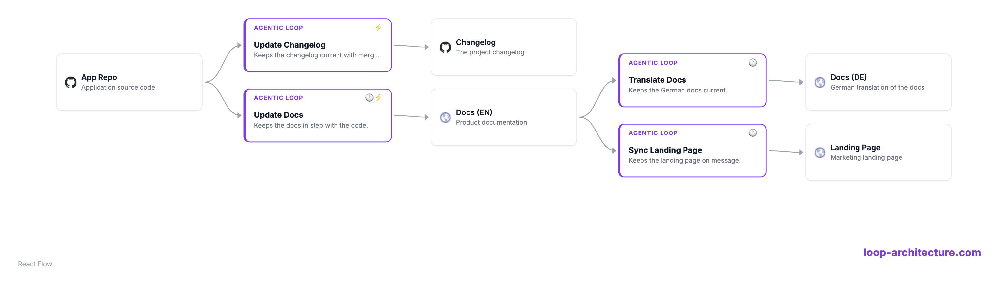

Agentic Loop Architecture
An architecture style that makes the agentic loop between systems the first-class unit of design. A loop is triggered on a schedule or event, uses one or more systems, runs its prompt, and writes back to those systems. A Loop Architecture is all of your loops, mapped together.
For example: a loop that keeps the changelog in sync with merged pull requests, or one that translates the docs to German whenever the English pages change.

Five principles
-
1
Loop Thinking.
Make the agentic loop between systems your unit of design. Think in loops, not just boxes.
-
2
Loops run continuously.
A loop is not a one-off. It keeps turning on its trigger, using systems and writing back again and again.
-
3
Loops are self-learning.
Each turn learns from the last. The loop measures its effect and improves how it decides over time.
-
4
Human on the loop.
A human supervises the whole, not every run. They spot-check with samples and focus on the results and their quality, not on reviewing each turn.
-
5
One file, real routines.
The whole architecture is one reviewable YAML that publishes to runnable Claude Code routines.
Examples
A Loop Architecture is one YAML file. Edit it on the left and the diagram on the right updates live: the systems, the agentic loops, and the edges between them. Pick an example, or click any system or loop for details.
Loading editor…
Loop Storming
Loop Storming is a collaborative workshop for discovering loops, in the spirit of Event Storming. The team maps the systems, connects them into loops (what each loop uses and writes back to), names them, writes their prompts, and sets triggers. The messy wall is your initial map; you then refine it into a formal Loop Architecture YAML.

looparch
The format
One plain YAML file with three top-level keys, id, systems, and
loops. Each loop uses (observe) systems and writes back to (act)
systems. A trigger is a 5-field cron, an ISO timestamp, a GitHub event, or manual.
id: your-org
systems:
- id: dash0
url: https://dash0.com # favicon becomes the icon
connector: dash0
- id: code-repo
repository: https://github.com/your-org/app
- id: docs
url: https://docs.your-org.com
loops:
- id: triage-incidents
name: Triage Incidents
trigger: "*/5 * * * *" # cron | ISO time | github event | manual
model: claude-opus-4-8 # the model this loop runs on
observe: [dash0] # systems it uses
act: [jira, slack] # systems it writes back to
prompt: Detect incidents; open a Jira ticket and post to Slack
- id: sync-docs
name: Sync Docs
trigger: # one trigger, or several
- "0 6 * * *"
- pull_request.merged
observe: [code-repo]
act: [docs]
prompt: > # what the loop does each turn
Diff the docs against changes merged in the last 24h and open a PR.
tools: [Read, Grep, Bash(gh pr *)]Tooling
Two tools work directly with a Loop Architecture YAML: the looparch visualizer to see it, and the looparch CLI to validate, visualize and publish it.
looparch visualizer
A small, embeddable React component (built on React Flow)
that renders a Loop Architecture as the interactive diagram above: the systems, the agentic
loops, and the edges between them. Drop it into any page, or open it from the CLI with
looparch view.
// the host page provides an import map (react, @xyflow/react) and visualizer.css
import { createController } from './visualizer/visualizer.js';
const viz = createController(document.getElementById('flow'));
viz.show('your-org.flow.json'); // a URL, or a graph object from `looparch export`looparch CLI
A Python CLI (built with uv) to validate, visualize and publish loops.
$ uv tool install looparch
$ looparch init your-org # scaffold an architecture
$ looparch validate your-org.looparch.yaml # schema + lint
$ looparch view your-org.looparch.yaml # open the interactive diagram
$ looparch export your-org.looparch.yaml # → React Flow JSON (interactive)
$ looparch publish your-org.looparch.yaml # → Claude Code routines
$ looparch import ./my-project # ← existing routines back to YAML
publish writes, for each loop, a slash command
(.claude/commands/loop-<id>.md) and a routine descriptor
(.claude/routines/<id>.json) with the loop's schedule/event, model, and repos.
FAQ
- What is Loop Architecture?
- Loop Architecture is an architecture style that makes the agentic loop between systems the first-class unit of design. A loop is triggered on a schedule or event, uses one or more systems, runs its prompt, and writes back to those systems. A Loop Architecture is all of your loops, mapped together in one diagram.
- What is an agentic loop?
- An agentic loop is a continuous cycle where an agent reads from (uses) one or more systems, runs a prompt toward a goal, and writes back to systems, again and again on its trigger. It runs continuously and is self-learning.
- What is Loop Storming?
- Loop Storming is a collaborative workshop for discovering the agentic loops between your systems, in the spirit of Event Storming. You map the systems (focusing on data, source code and storage), connect them into loops, name them, and set triggers.
- How do I publish a loop to Claude Code?
- Encode your loops in one Loop Architecture YAML file and run
looparch publish. Each loop becomes a Claude Code routine: a slash command plus a schedule or event trigger. - What is looparch?
looparchis a Python CLI (built with uv) that validates, visualizes and publishes a Loop Architecture, and can import existing Claude Code routines back into YAML.- How is Loop Architecture different from event-driven or microservice architecture?
- Traditional architecture designs the systems and the requests between them. Loop Architecture designs the agentic loops that run continuously between those systems, each using some systems and writing back to others.
- Who created Loop Architecture?
- Loop Architecture was coined by Arif Wider and Simon Harrer at SummerSOC on 1 July 2026, on the island of Crete.
Origin
The term Loop Architecture was coined by Arif Wider and Simon Harrer at SummerSOC on , on the island of Crete, the same day they visited the cave where, in myth, Zeus was born.